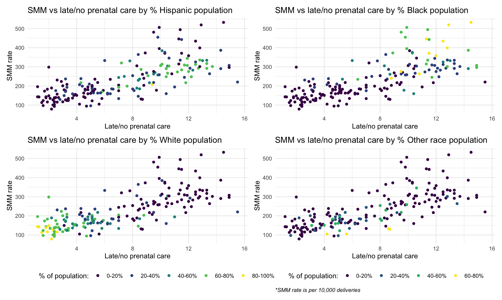

The following plots are an exploration of the relationship between various predictors and the outcome of severe maternal morbididy (SMM).
poverty_smm_ggplot =
plots_df %>%
ggplot(aes(x = poverty, y = smm, group = nta_name)) +
geom_point(color = "red") +
labs(
title = "Exploration of Poverty and Maternal Morbidity in NYC Neighborhoods",
x = "Percentage Population Below Federal Poverty Level",
y = "Rate of SMM per 10,000 Deliveries")
ggplotly(poverty_smm_ggplot)This plot shows a general positive trend between poverty and severe maternal morbidity. Neighborhoods with higher percentage of their population in poverty also have higher rates of maternal morbidity. However, there are a few outliers that do not follow the trend, including Williamsburg, which has a high population percentage of poverty but much lower rates of SMM compared to other neighborhoods in New York City.
poverty2_smm_ggplot =
plots_df %>%
ggplot(aes(x = poverty_level, y = smm)) +
geom_boxplot() +
labs(
title = "Exploration of Levels of Poverty and Maternal Morbidity in NYC Neighborhoods",
x = "Grouped Percentage Population Below Federal Poverty Level",
y = "Rate of SMM per 10,000 Deliveries")
ggplotly(poverty2_smm_ggplot)## Warning: Removed 25 rows containing non-finite values (stat_boxplot).A new categorical variable for poverty was created to further examine the association between poverty and SMM. The direct relationship between the two variables can be observed in this plot as well. However, it is interesting to note the differing variabilities in each level. For example, amongst neighborhoods where greater than 40% of the population is in poverty, the SMM rates are high, as expected, but there is less variability than neighborhoods where 30% to 40% of the population is in poverty.
prenatal_care_ggplot =
plots_df %>%
ggplot(aes(x = late_no_prenatal_care, y = smm, group = nta_name)) +
geom_point(color = "red") +
labs(
title = "Exploration of Access to Prenatal Care and Maternal Morbidity in NYC Neighborhoods",
x = "Percent Live Births Recieving Late or No Prenatal Care",
y = "Rate of SMM per 10,000 Deliveries")
ggplotly(prenatal_care_ggplot)Access to prenatal care is directly correlated with maternal morbidity, as shown in this graph. Neighborhoods with a higher percentage of births receiving late or no prenatal care also have higher rates of SMM in the population.
smm_prenatal_hispanic =
race_df %>%
ggplot(aes(x = late_no_prenatal_care, y = smm)) +
geom_point(aes(color = hispanic_percent)) +
labs(
title = "SMM vs late/no prenatal care by % Hispanic population",
x = "Late/no prenatal care",
y = "SMM rate",
color = "% of population:"
)
smm_prenatal_black =
race_df %>%
ggplot(aes(x = late_no_prenatal_care, y = smm)) +
geom_point(aes(color = black_percent)) +
labs(
title = "SMM vs late/no prenatal care by % Black population",
x = "Late/no prenatal care",
y = "SMM rate",
color = "% of population:"
)
smm_prenatal_white =
race_df %>%
ggplot(aes(x = late_no_prenatal_care, y = smm)) +
geom_point(aes(color = white_percent)) +
labs(
title = "SMM vs late/no prenatal care by % White population",
x = "Late/no prenatal care",
y = "SMM rate",
color = "% of population:"
)
smm_prenatal_other =
race_df %>%
ggplot(aes(x = late_no_prenatal_care, y = smm)) +
geom_point(aes(color = other_percent)) +
labs(
title = "SMM vs late/no prenatal care by % Other race population",
x = "Late/no prenatal care",
y = "SMM rate",
color = "% of population:"
)
smm_prenatal_all = smm_prenatal_hispanic + smm_prenatal_black + smm_prenatal_white + smm_prenatal_other +
plot_layout(guides = "collect") +
labs(caption = "*SMM rate is per 10,000 deliveries") +
theme(plot.caption = element_text(hjust = 0, face = "italic"))
smm_prenatal_all
Among populations with higher percentages of Black or Hispanic people, there appears to be higher levels of both late or no prenatal care and SMM rate. In populations with higher percentages of White people, the opposite appears to be true where there are lower rates of late or no prenatal care and lower SMM rates.
Ayeshra Acharya, Zaynub Ibrahim, Cynthia Liu, Shelley Shen